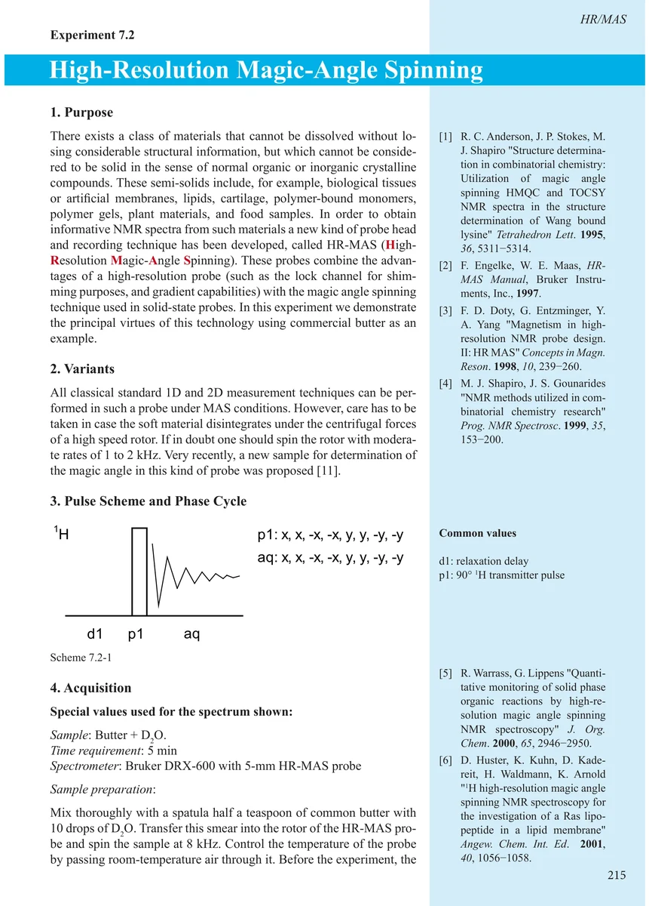
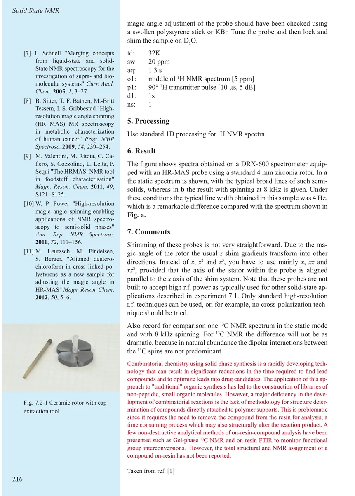
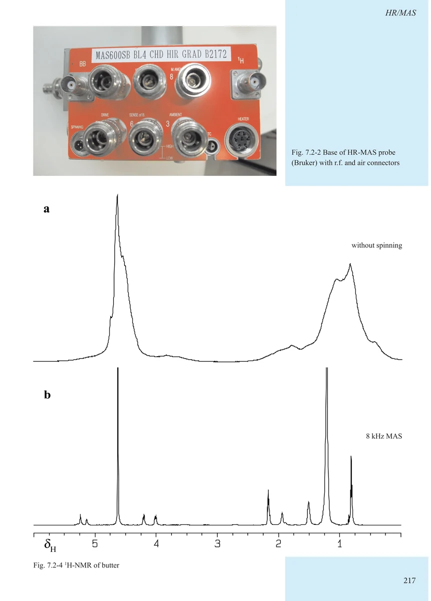
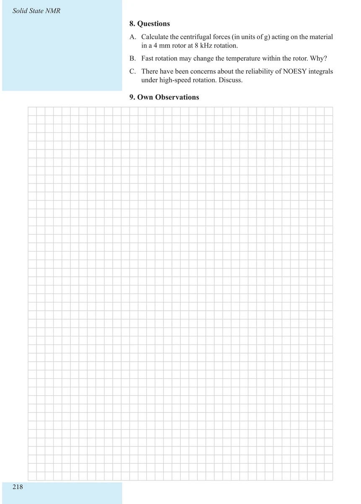

Item 7.2
High-Resolution Magic-Angle Spinning
高分辨魔角旋转
PDF 225–228 · 原书 215–218 · An Excursion to the Solid State and to Structural Biology




核磁共振实验方法、脉冲序列与谱图实践
Item 7.2
高分辨魔角旋转
PDF 225–228 · 原书 215–218 · An Excursion to the Solid State and to Structural Biology



